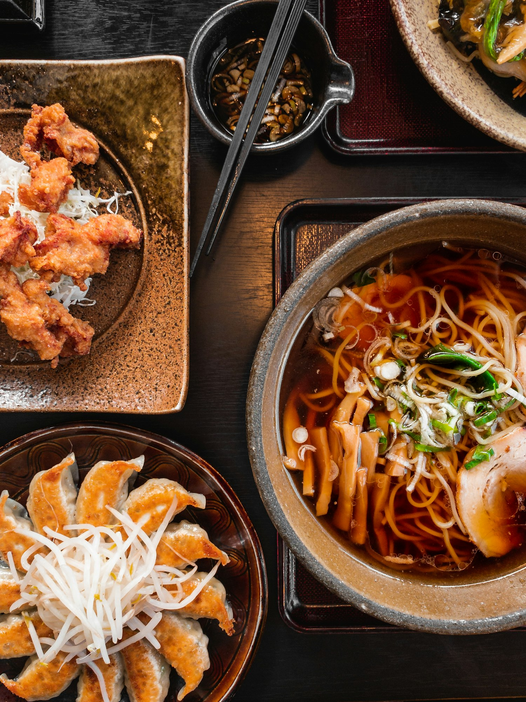
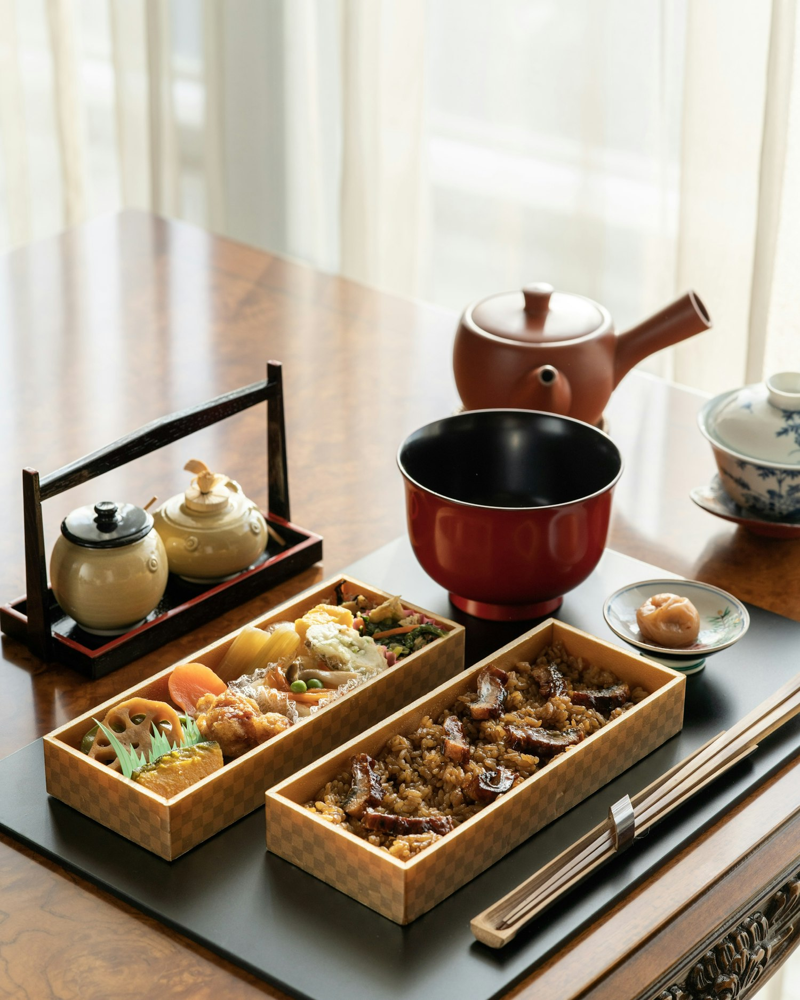
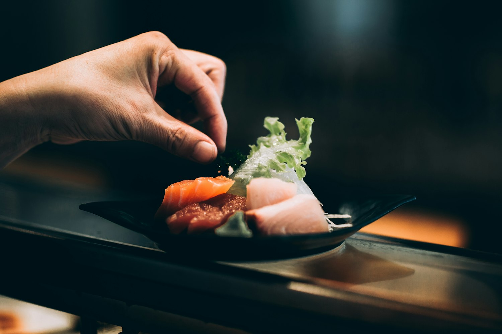

物 語 · T H E S T O R Y
日向 — Toward the sun
A meal made
an arm's length away.
Two cities, one counter, and a chef who learned that precision and warmth are the same discipline.
日向 — Toward the sun
Two cities, one counter, and a chef who learned that precision and warmth are the same discipline.
序 — Origins
Rei Adachi trained for eleven years behind sushi counters in Tokyo's Ginza, where a slice of fish is a sentence and the rice is the grammar. Then a season cooking on the Ligurian coast rearranged everything — the oil, the citrus, the unhurried light. HINATA is what happened when those two rooms were asked to share one counter.
The name means a sunlit place — the warm spot on the floor where a cat will sleep. We built the room around that idea: pale stone, raw cypress, a single long window. No music to speak over. Just ten people, one chef, and the sound of a knife finding its line.

04:40 · Market壱
Before dawn
There is no supplier list framed on our wall. Every morning the chef stands at the market and lets the catch decide. What is best today becomes courses two, five, and six tonight. What isn't, waits. It is the least efficient way to run a kitchen and the only honest one.

The counter弐
Ten seats
We seat ten because eleven is a crowd and nine is a loss. From your seat you can watch the toro rested to silk, the egg cooked slow as a cake, the citrus charred to order. Dinner is roughly two hours. We ask only that phones rest in pockets — the show is on the board, not the screen.

Olio nuovo参
Two pantries
Our rice is from a single Yamagata grower; our oil is first-press from a grove we visit each autumn; our lemons come off the sill behind you. The pairing isn't fusion — it's restraint meeting generosity. A brushstroke of green oil where another counter would reach for soy. The sun, on the plate.
Precision is how you respect the fish. Warmth is how you respect the guest. I never understood why they were kept in separate rooms.Rei Adachi